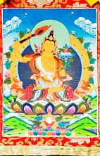

Бодхисаттва семейства Лотоса (Падма), один из трёх главных Бодхисаттв, наряду с Авалокитешварой и Ваджрапани. Манджушри считается воплощением праджняпарамиты, то есть высшей мудрости. По-другому, он представляет просветленный ум Будд.
Если говорить о качествах личности, то он является символом человеческой мудрости, разума и воли. По легенде, Манджушри восемьдесят четыре тысячи лет назад служил будде. Он дал слово во что бы то ни стало стать Бодхисаттвой и жить в сансаре до тех пор, пока не останется ни одного существа, нуждающегося в спасении.
В Тибете земным воплощением Манджушри считался основатель школы Гелуг Чже Цонкапа (1357—1419). В изображениях на тханках и статуэтках у него те же атрибуты в руках.
Так как Манджушри не только Бодхисаттва Мудрости (санскр. Праджня), но и покровитель знания (санскр. Джняна) и сутр Праджня-парамиты, поэтому все практики и мантры, посвящённые ему, помогают развить мудрость, укрепляют память, способствуют глубокому постижению Дхармы.
Также Манджушри считается бодхисаттвой ясного слова, красивого голоса, владыкой речи.
Его главная мантра – ОМ АРАПАЧАНА ДИ. Другая мантра Манджуштри – ОМ ВАГЕШВАРИ МУМ.
Основное изображение Манджушри – это индийский царевич, сидящий на спине льва. Правой рукой он возносит пылающий меч, огнём которого он рассеивает мрак невежества, а левой рукой держит стебель лотоса, на котором лежит «Сутра Праджняпарамита» - учение о совершенной высшей мудрости.
Многие буддисты покупают статуэтки Манджушри для лучшего интеллектуального понимания учения. Приступая к изучению воззрения, они обращаются к нему и читают его мантру.